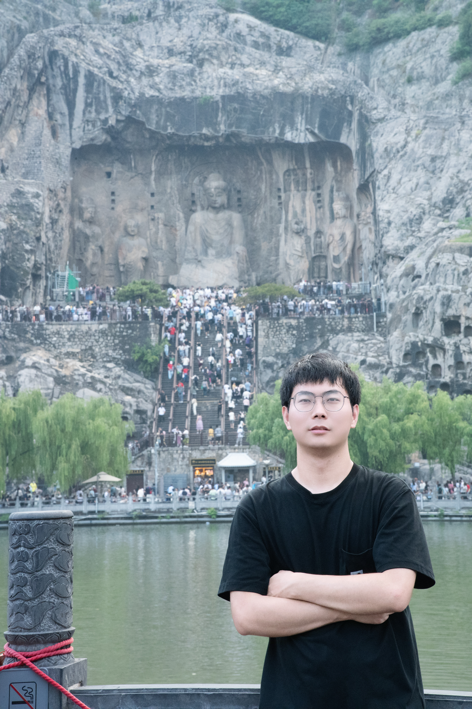

Seismic AI Agent · 面向智能地球物理处理工作流的多智能体协同系统 — 核心开发者
- 基于 LLM、LangGraph 与 FastAPI 研发嵌入式多智能体协同系统，通过自然语言指令驱动“任务规划 — 参数寻优 — 工具调度 — 质控评估”全流程闭环。
- 通过 FastMCP 封装 7 类地球物理工具模块，融入物理先验输出可解释推理依据。
- 设计大文件算存分离与异常自适应重算机制，实测信噪比提升 15 dB 以上、首事件响应延迟 < 1 s。

南昌大学 计算机技术 硕士研究生（2024 – 2027）· 2027 届应届毕业生
我是吴龙秋，南昌大学计算机技术专业全日制硕士研究生，研究方向为人工智能与地球物理的交叉领域， 聚焦基于冷扩散模型（Cold Diffusion）与扩散 Transformer（DiT）的地震全波形反演。 目前以第一作者身份主研国家自然科学基金项目，提出融合确定性高斯平滑物理先验与条件扩散 Transformer 的高效地下速度建模框架，在 OpenFWI 数据集上实现 50 倍推理加速；研究成果已被 ICEEG 2026 录用，第一作者 SCI 论文在投 IEEE TGRS。 此前曾先后就职于上海钢银与江西博微，担任 Java 开发工程师，具备从微服务底座、CI/CD 平台到云原生运维的完整工程实践经验。
提出融合确定性高斯平滑物理先验与条件冷扩散 Transformer（DiT）的地下速度建模框架， 消除对初始模型的依赖，在国际权威数据集 OpenFWI 上实现 50 倍推理加速（仅需 20 步采样）， 反演精度与跨地质构造泛化能力显著超越现有主流模型。
第一作者 SCI 论文，已投递遥感与地球物理领域国际顶级期刊 IEEE TGRS。